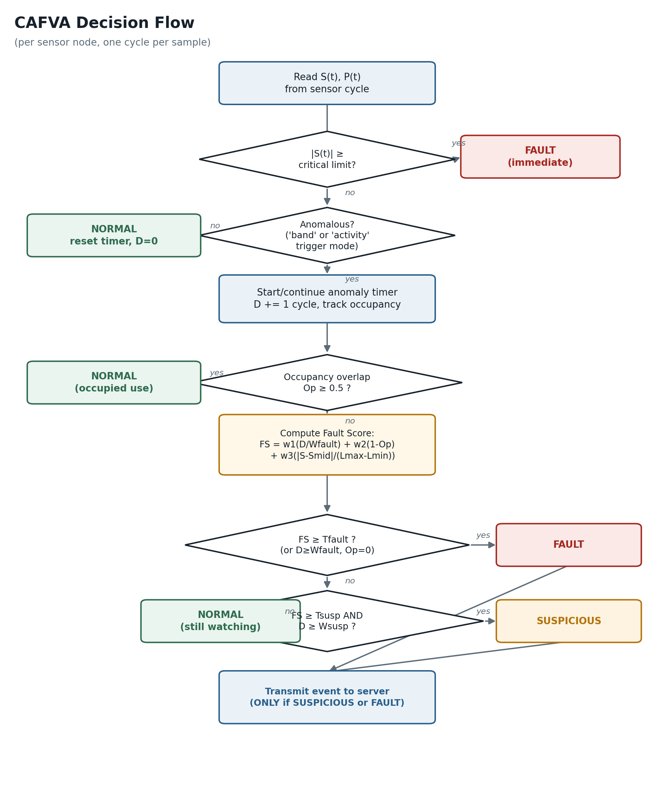
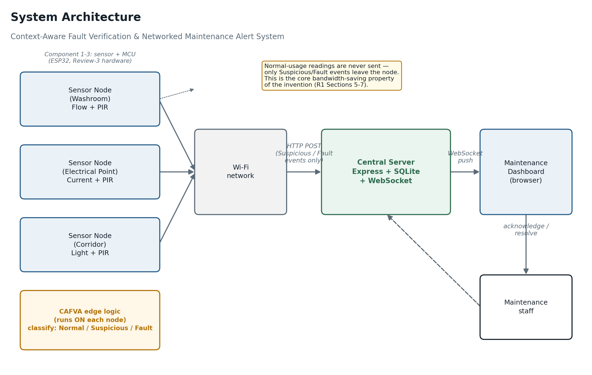

About this system
Context-Aware Fault Verification & Networked Maintenance Alert System
This dashboard is the front end for a system that watches shared hostel facilities (washroom taps, electrical points, corridor lights) for faults — a running tap, a stuck-on light, a current surge — without cameras and without flooding maintenance staff with false alarms from ordinary use.
How it decides something is actually wrong
Each sensor node runs the Context-Aware Fault Verification Algorithm (CAFVA) locally: a reading only becomes an alert if it persists for long enough and there's no one around (via a PIR presence sensor) to explain it. A tap running while someone showers is Normal Usage and is never transmitted at all — only Suspicious and Fault classifications ever leave the node. That's what keeps this system's network and server load low compared to always-on camera monitoring.

System architecture
Sensor nodes classify locally, then report over Wi-Fi to a central server, which pushes live updates to this dashboard over WebSocket.

Tech stack
Project status
Algorithm, server, and dashboard are implemented and tested (8/8 automated tests passing on the fault-verification logic). Physical sensor hardware — ESP32 boards, flow/current/PIR/light sensors — is the next build phase; until then, this dashboard is being exercised by a virtual sensor-node simulator that runs the identical classification logic against realistic scripted scenarios.
Pages in this dashboard
- Dashboard — top-line snapshot: metrics + a preview of active alerts and nodes.
- Active Alerts — everything currently unresolved, with acknowledge/resolve actions.
- Event Log — permanent history, filterable, exportable to CSV.
- Nodes — every registered sensor node and its lifetime alert history.
- Metrics — trends over time and breakdown by sensor type.